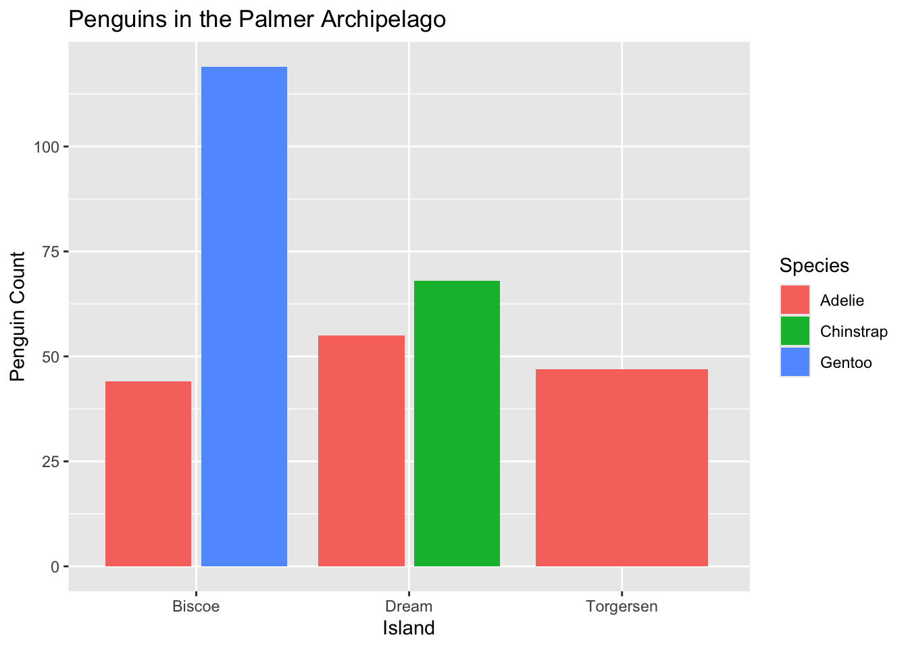
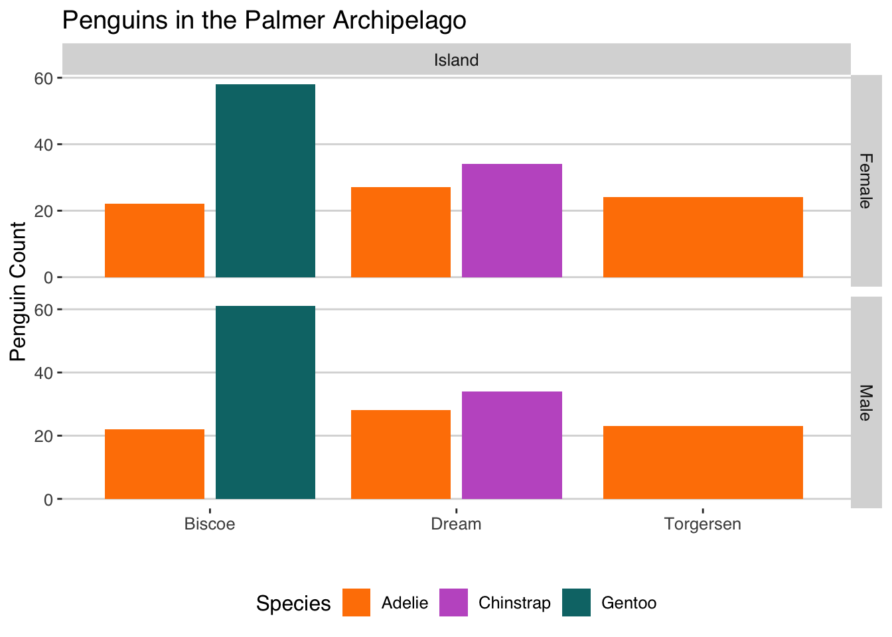

How Many Penguins? A First Look at Visualising Data With R and ggplot2
ggplot2
R
data visualisation
An introduction to ggplot2 using the Palmer Archipelago dataset, focusing on data cleansing and bar plots.
Published
November 9, 2024
R and its ggplot2 package are wonderful tools for visualising data. In this post, we will explore some of the basics of plotting with ggplot2 by creating bar charts using the famous Palmer Archipelago dataset.
Palmer penguins. Artwork by @allison_horst.
The dataset being used can be downloaded directly (in csv format) from Kaggle or imported directly into R with the palmerpenguins package.
Importing the Data
Move the dataset to the location of the R script you will be plotting in, or use a relative path. Remember that for R to find your file you may need to set your current working directory, you can do this in RStudio by clicking Session <- Set Working Directory <- To Source File Location in the banner, or by running the setwd("/your_path_here") command.
# Import the penguins dataset using the read.csv() function, built into Rpenguins <-read.csv("penguins_size.csv")# View the first few entries of the dataframeprint(penguins[1:5,])
species island culmen_length_mm culmen_depth_mm flipper_length_mm
1 Adelie Torgersen 39.1 18.7 181
2 Adelie Torgersen 39.5 17.4 186
3 Adelie Torgersen 40.3 18.0 195
4 Adelie Torgersen NA NA NA
5 Adelie Torgersen 36.7 19.3 193
body_mass_g sex
1 3750 MALE
2 3800 FEMALE
3 3250 FEMALE
4 NA <NA>
5 3450 FEMALE
Cleaning Up
Viewing the dataset by printing the first few rows has revealed our first issue, this data has several NA values. A great way to visualise the amount of data missing in a given dataframe in R is using the vis_miss function from the naniar library. You may need to install this by running install.packages('naniar').
Reassuringly the dataset has very few missing values. The easiest way to deal with these will be to exclude them using na.omit() which simply removes each row in a dataframe that has any NA values in it.
penguins <-na.omit(penguins)vis_miss(penguins)
Another good idea when working with a new dataset is to make sure that any categorical variables are treated as factors in R. This can be done with as.factor(col) and makes sure that plots of categorical variables work correctly.
We can also change the names of any columns. Below I have changed the names of the variables will be plotting to be capitalised so that they will look a little nicer in legends.
There is one more issue with the dataset in its current form. The sex for one observation is missing, instead containing just a full stop. A helpful side effect of converting our categorical variables to factors is that we can see this easily by printing the levels of each factor variable.
print(levels(penguins$Sex))
[1] "." "FEMALE" "MALE"
print(levels(penguins$Island))
[1] "Biscoe" "Dream" "Torgersen"
print(levels(penguins$Species))
[1] "Adelie" "Chinstrap" "Gentoo"
To handle this we can use the filter() function from the dplyr library. The ! before (Sex == ".") means that rather than returning the dataset with only rows where the sex of the penguin is “.” the function will do the opposite and select all rows where the sex does not equal “.”.
We are now ready to start plotting. For this first look at ggplot2 we will focus on bar plots.
Creating Plots
To create any plot with ggplot2 we first need to create the plot area with the ggplot() function. For all plots we will need to specify the data being used and any aesthetics we wish to pass through to the graphs we will be plotting. For this first tutorial we will focus exclusively on the number of penguins for specific categories in the dataset rather than any other dependent variable.
library(ggplot2) # Load the ggplot2 library at the start of the scriptggplot(data = penguins, aes(x=Species)) +geom_bar()
Intuitively, we add new elements to a plot with +. For this tutorial we use geom_bar() for a bar plot but other plots available include geom_point() for a scatter plot, geom_col() for a column plot or geom_line() for a line plot. We could even add multiple plots to the same axes.
In aesthetics (aes), x = Species means that the x-axis of our bar plot i.e. the category is the species of penguin. In the below plot x = Island is used to instead have the island the penguin was found on in the x-axis. For this plot fill = Species indicates that we want our bars to be coloured by the species of the penguin.
# We can also use a pipe from the dplyr library (think of it as 'then')penguins %>%ggplot(aes(x=Island, fill=Species)) +geom_bar()
We can enhance our plots by adding some labels using labs() to add a title, x-axis and y-axis. To change the title of a legend we can use the argument fill = title for bar plots.
penguins %>%ggplot(aes(x=Species, fill=Species)) +geom_bar()+labs(title="Penguins in the Palmer Archipelago",x ="Species",y="Penguin Count")
penguins %>%ggplot(aes(x=Island, fill=Species)) +geom_bar(position ="dodge2")+labs(title="Penguins in the Palmer Archipelago",x ="Island",y="Penguin Count")

Themes allow us to customise our plots further. There are many built into ggplot2 however my favourite, easy to implement, themes are those in the ggthemes package. The below graphs use the themes theme_hc, theme_economist and theme_calc() but there are far more available. Each theme also comes with a colour palette that can be used. A custom colour palette could also have been used with scale_color_manual(c(color1, color2, color3)) .
library(ggthemes) # Load the ggthemes librarypenguins %>%ggplot(aes(x=Species, fill=Species)) +geom_bar()+labs(title="Penguins in the Palmer Archipelago",x="Species",y="Penguin Count") +geom_rangeframe() +# Highlights the range of the variablestheme_hc() +# Use the hc themescale_fill_hc()+# Use the hc palettetheme(legend.position ="none")
penguins %>%ggplot(aes(x=Island, fill=Species)) +geom_bar(position ="dodge2")+# position = dodge2 puts the bars side by sidelabs(title="Penguins in the Palmer Archipelago",x ="Island",y="Penguin Count",fill="Species") +geom_rangeframe() +scale_fill_economist()+# Use the economist palettetheme_economist() # Use the economist theme
penguins %>%ggplot(aes(x=Sex, fill=Species)) +geom_bar(position ="dodge2")+labs(title="Penguins in the Palmer Archipelago",x ="Sex",y="Penguin Count",fill="Species") +geom_rangeframe() +scale_fill_few()+theme_calc() # We can mix and match themes and palettes
Combining Plots
We can use a facet grid to combine all of the information from our plots so far into a single, easy to read plot. To do this we will need to reshape the penguins dataframe using the melt function and the the MASS, reshape and reshape2 packages.
library(MASS) library(reshape2) library(reshape) penguin_2 <-melt(penguins, id =c('culmen_length_mm', 'culmen_depth_mm','flipper_length_mm', 'body_mass_g','Species','Sex'))print(head(penguin_2)) # See the first few entries of our reshaped dataframe
culmen_length_mm culmen_depth_mm flipper_length_mm body_mass_g Species Sex
1 39.1 18.7 181 3750 Adelie MALE
2 39.5 17.4 186 3800 Adelie FEMALE
3 40.3 18.0 195 3250 Adelie FEMALE
4 36.7 19.3 193 3450 Adelie FEMALE
5 39.3 20.6 190 3650 Adelie MALE
6 38.9 17.8 181 3625 Adelie FEMALE
variable value
1 Island Torgersen
2 Island Torgersen
3 Island Torgersen
4 Island Torgersen
5 Island Torgersen
6 Island Torgersen
# Create a vector so that we can later show the sex of a penguin as "Male"# or "Female" rather than the all caps versionsex.labs <-c("Male", "Female")names(sex.labs) <-c("MALE", "FEMALE")ggplot(penguin_2, aes(x=value, fill = Species))+geom_bar(position ="dodge2")+facet_grid(Sex~variable, # facet_grid showing sex and each variable (Island) scales="free",space="free_x", labeller =labeller(Sex=sex.labs))+# Renames the sexeslabs(x="",y="Penguin Count",title="Penguins in the Palmer Archipelago")+theme_hc()+scale_fill_manual(values=c("#FF8100", "#C25ECA", "#067476")) # Set custom colours

Conclusion
This final plot shows us the distribution of penguins across each island, for each species and for both sexes.
In the next post we will begin looking at the other variables in the dataset such as body mass and flipper length and look at if these vary based on sex, island or species.